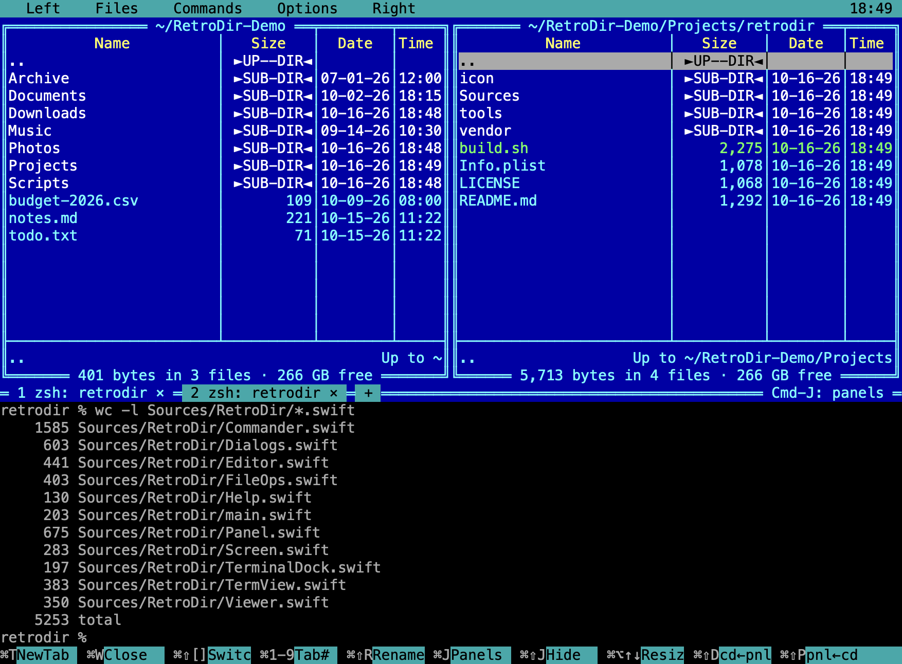
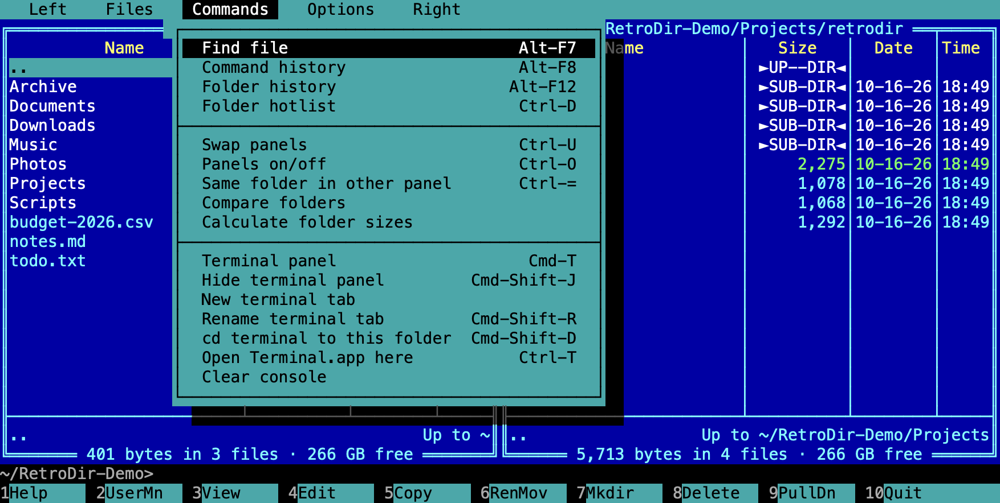
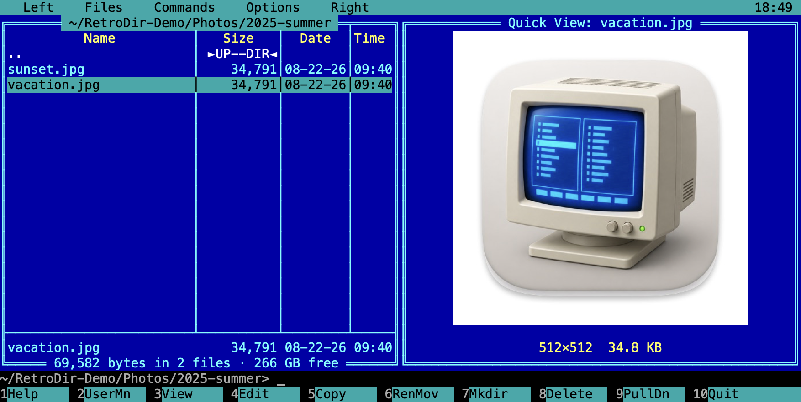
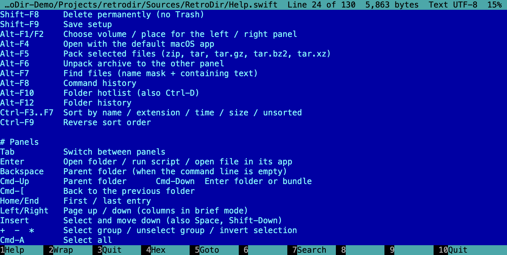
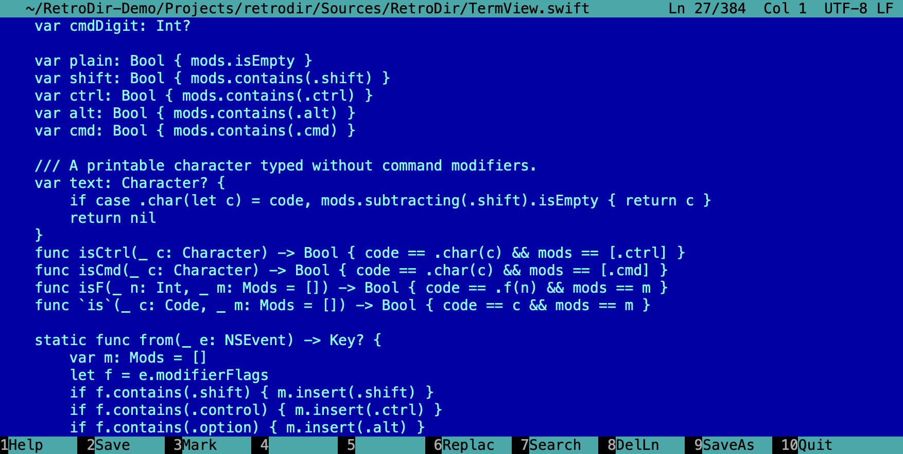
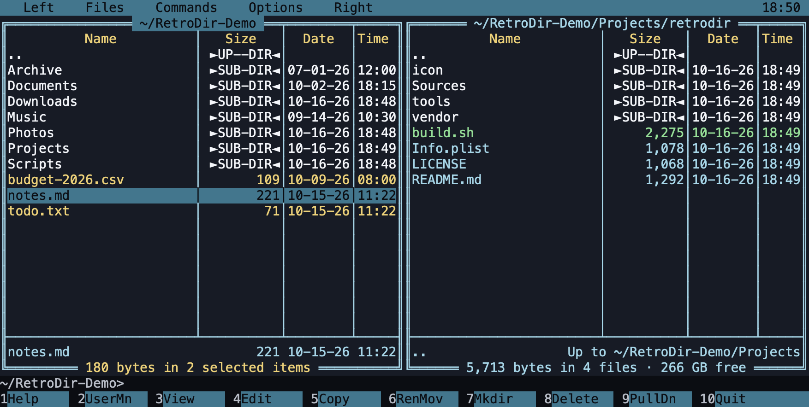
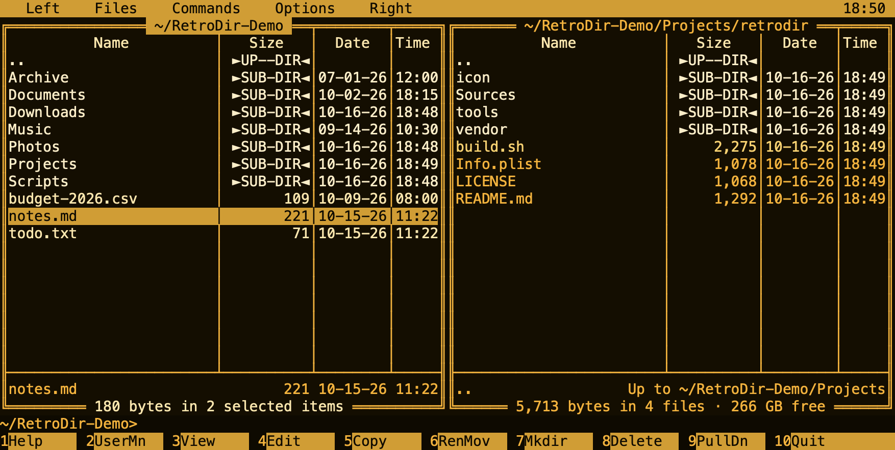
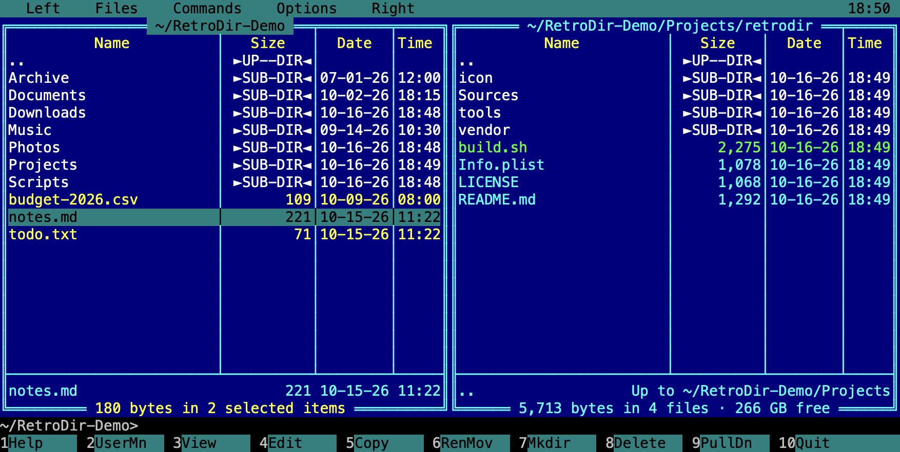

Two panels. Ten function keys. No clutter.
RetroDir brings the classic orthodox file manager layout to the Mac: two folders side by side, everything on the keyboard, and a text-mode look that stays out of your way.
Dual panels
Copy, move, rename and delete between two folders with F5–F8. Brief and full views, sorting, group select with masks, compare folders.
Built-in terminal
Press Cmd-T to split the window with a full terminal underneath. Tabs, resizing, and syncing the shell with the active panel's folder.
Viewer & editor
F3 views text or hex, even for very large files. F4 opens an editor with undo, search and replace, and selection.
Quick View & Info
Preview text, images and archive contents in the other panel with Ctrl-Q, or show folder and disk details with Ctrl-L.
Archives & search
Pack to zip or tar, unpack to the other panel, and find files by name mask and contents with Alt-F7.
Made for the Mac
Trash support, Quick Look, Finder drag and drop, APFS clones for fast copies, and Cmd-1…Cmd-0 as F-keys on laptops.
A closer look
Every screen is drawn on a character grid, just like the originals, but with crisp Retina text.





Four colour themes
Classic Blue is the default. Switch any time from Options in the menu.



The essentials
Press F1 in the app for the full keyboard reference. Everything works with the mouse too.
Get RetroDir
RetroDir is free. Download a release, or build it yourself in under a minute.
Download
A signed and notarized universal app for Apple silicon and Intel Macs. Requires macOS 13 Ventura or later.
Download RetroDir.dmgOpen the DMG and drag RetroDir to Applications. See what’s new, or older versions on GitHub Releases.
Build from source
Needs only Apple's Command Line Tools. No Xcode project, no package manager.
# one-time, if you don't have them
xcode-select --install
git clone https://github.com/ehsanhaque/retrodir.git
cd retrodir
./build.sh
open build/RetroDir.app